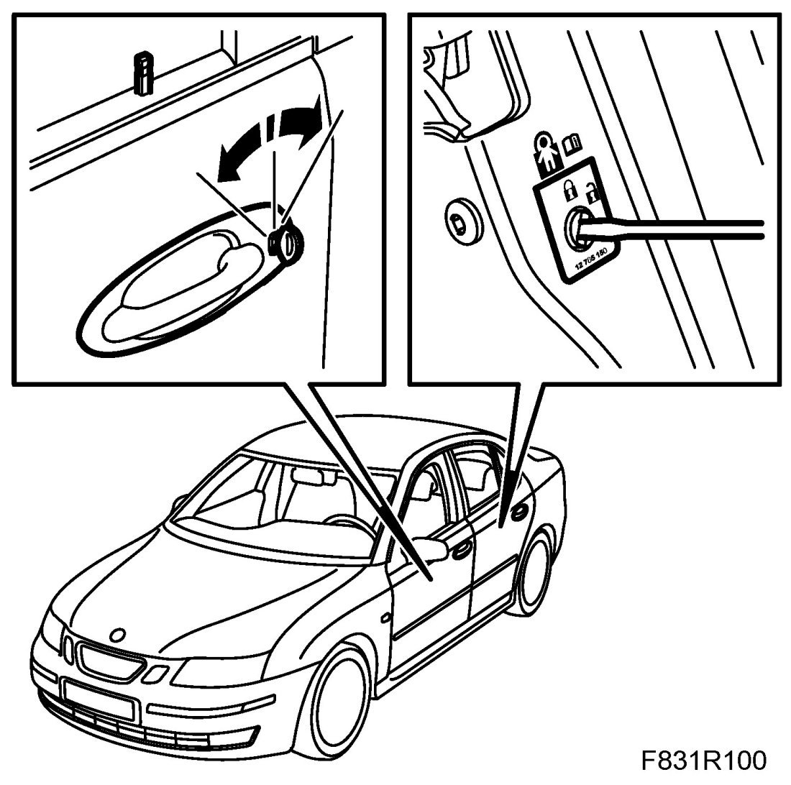
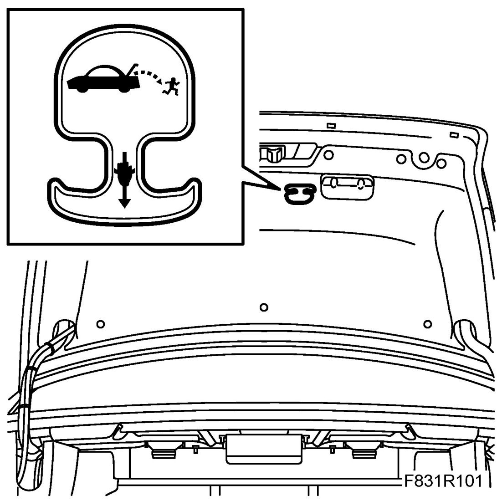

Component Tests and General Diagnostics
Checking The Lock, Door Catch Arm And Hinge
1. Make a functional control of all locks on doors, bootlid and fuel filler flap. Lubricate the door lock's lock cylinder on the left-hand door. Use 30 06 582 Lubricating fluid.

2. Make a functional control of the bonnet lock and its safety catch. Lubricate with 30 06 442 White high-pressure grease paste.
3. US/CA 4D: Make a functional control of the emergency opening handle in the luggage compartment.
